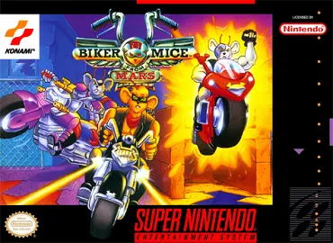

Biker Mice From Mars
Super Nintendo (SNES)
Desenvolvedora: Konami
Editora: Konami
Lançamento: 1994
Gênero: Corrida / Combate Veicular
Modos de Jogo: Single-player, Multiplayer (até 2 jogadores)
Baseado na famosa série animada "Esquadrão Marte" exibida nos anos 90, este título da Konami é um dos jogos de corrida isométrica mais frenéticos e icônicos do SNES. Com uma visão diagonal no estilo "Rock N' Roll Racing", o jogo mistura velocidade, personalização de motos e muita pancadaria nas pistas.
📜 A História
A trama acompanha os três ratos motoqueiros marcianos — Throttle (Trotter), Modo e Vinnie — em sua luta para proteger o planeta Terra (e a cidade de Chicago) do terrível plutarkiano Lawrence Limburger. As corridas clandestinas são organizadas por Limburger, e os ratos precisam vencer para frustrar seus planos e ganhar dinheiro para melhorias.
🎮 Destaques e Jogabilidade
- Seis Pilotos Únicos: Além dos três heróis, você pode jogar com os vilões da série: Lawrence Limburger, Dr. Karbunkle e o bizarro Fred, o Mutante. Cada um possui status diferentes de velocidade, aceleração e armadura.
- Sistema de Upgrades: Entre as corridas, você visita a oficina da mecânica Charley Davidson, onde o dinheiro ganho nas pistas pode ser gasto em motores, pneus, armaduras e novas armas.
- Caos nas Pistas: A jogabilidade não é apenas sobre correr. Você precisa usar mísseis, terremotos, tornados (especial do Throttle) e poças de óleo para atrapalhar os adversários, além de pegar pacotes de dinheiro espalhados pelas voltas.
✨ Fator Replay
O modo Campeonato (Main Race) possui várias rodadas de dificuldade crescente (Normal, Hard, Super Hard) e a necessidade de testar combinações diferentes de peças na moto de cada personagem traz um excelente valor de replay, especialmente no divertidíssimo modo para dois jogadores.
Como Salvar
Para salvar seu progresso neste jogo, você pode salvar o arquivo .save usando as opções do emulador que está utilizando. Isso pode ser feito através do ícone 💾 no menu no canto inferior esquerdo da tela. Isso criará um arquivo de salvamento que você poderá carregar 📂 posteriormente para continuar de onde parou.